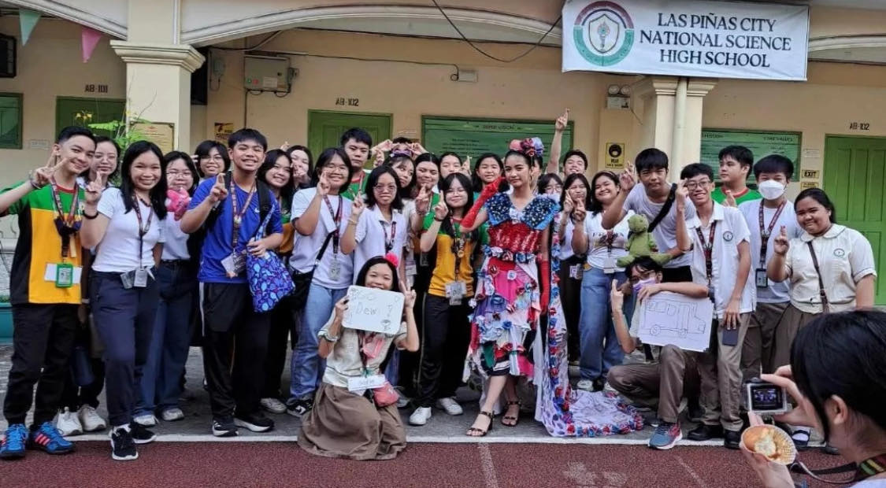

you are currently in the q2 activities page.
use the links up top to traverse through the entire portfolio!
I. V-pop
Snippets of us practicing for our VPOP.
A tradition every December where we borrow almost every teacher's time for us to practice.
Our main choreography was handled by Arkin Punzalan, while our props were handled by a separate committee who all volunteered for the job.
As of writing this, we are only about 70% into completing the dance, but I'll be sure to provide an update in my next portfolio.
Pictures: Zatee De Leon
Video: Yvia Caspe
II. Historical Icon
Going back earlier into the second quarter, we also had the Historical Icon contest. We also borrowed almost every teacher's time for us to prepare.
I was mainly in the folding department, where we made a heck ton of paper flowers for the painting department to use.
Our representative, Dewi Nuqui, sported our DIY costume and earned us a grade of 93. Worth it.
Pictures: Me

III. Food Safety with Max's
Another thing I got to do this quarter: the Max's food safety seminar.
As soon as Ms. asked for volunteers, I knew I had to join. I attended the seminar with Elisha, Gwen, and Janna, who all probably wanted food rather than do the actual seminar.
It was a great time, and I definitely left the event with more knowledge about this very topic.
Pictures: Me
IV. Teacher's Day
A thing we also had: Teacher's Day!
Before we held our own facilitated program, we had the Mini-chers event, where each one of us volunteered to fill in our teachers' shoes and be the one to bless the class with knowledge.
After that, it was time for our main program. Our guest teachers were Sir Estrella, Ms. Gia, Ms. Risa, and Ms. Eden, who all seemed to enjoy what we had to offer.
Pictures: Thirdy Pastor & Lance Esliza
Video: Sofie Mercado
(Arkin performing a crazy dance number for the teachers)
V. Intrams 2024
Another tradition held very early into the school year: Intrams!
All sorts of sports were featured, including basketball, volleyball, table tennis, athletics, and even Mobile Legends somehow.
My section was part of the Green Magindara, who held a pretty tight lead in all the ball games. The first picture took place during the opening ceremony. The second picture was taken after the finals of the Girls' Volleyball, where we earned a hard-fought 2nd Place. The video was also taken during the opening ceremony, and sadly, I do not remember the context of it.
Pictures: Me & an SPTA person
Video: Sofie Mercado